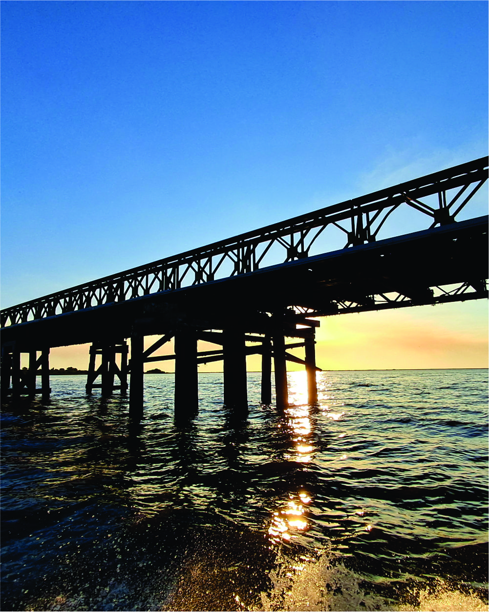
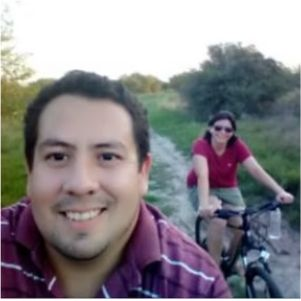
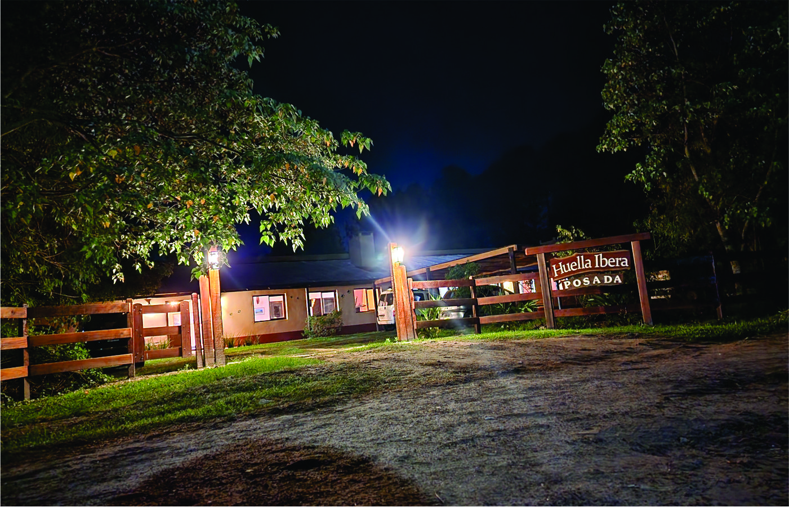
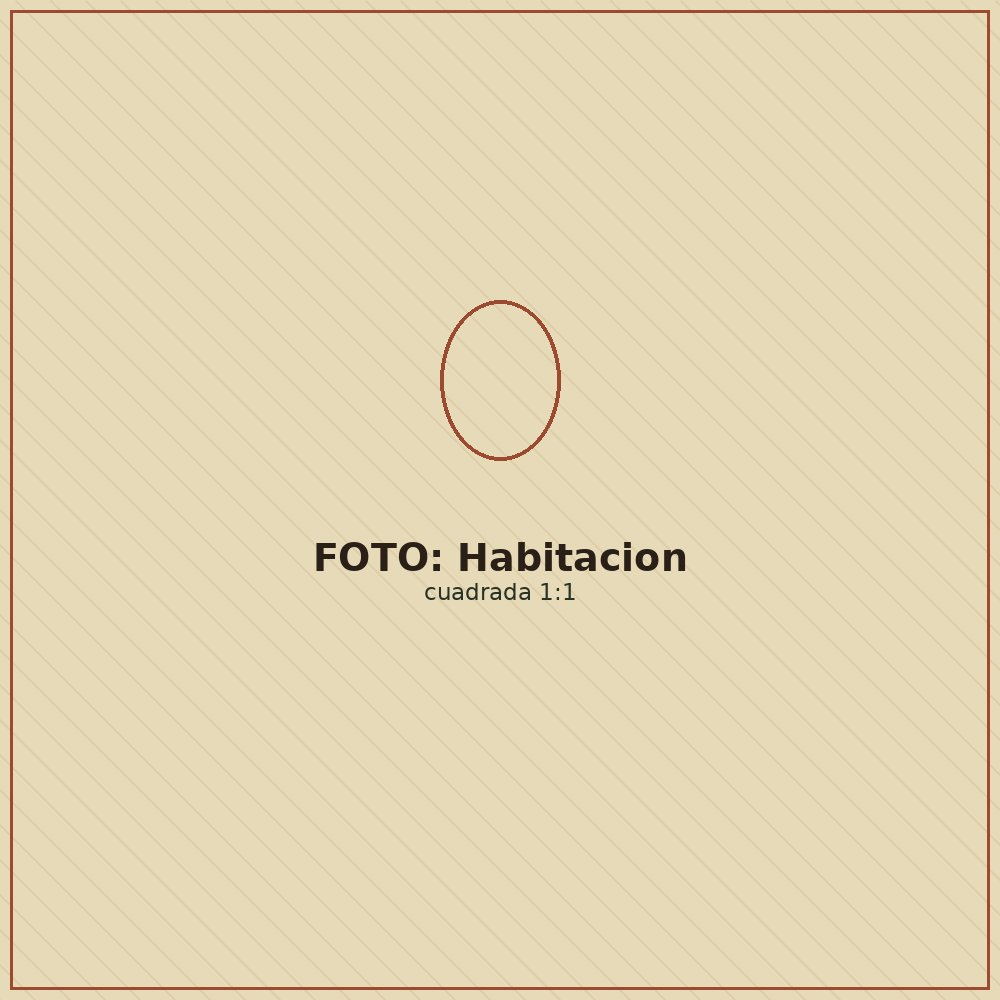
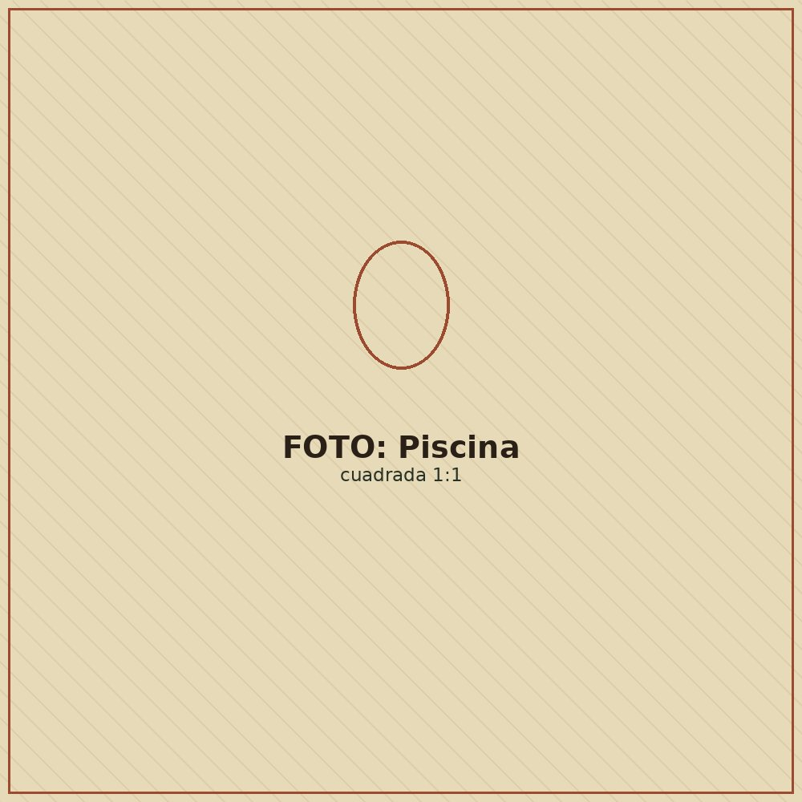

Nuestra huella
Un refugio de campo correntino
frente al estero más vivo de Argentina
Huella Iberá está a una cuadra de la Laguna Iberá y a cuatro del embarcadero, en un pueblo de calles de tierra, casas de barro y gente que vive del monte y del agua. Nueve habitaciones grandes, dos salones con hogar a leña y un jardín de plantas nativas que da la bienvenida después de cada expedición.
Cocinamos con verduras de huertas orgánicas locales y carnes de los campos vecinos de Camba Trapo. La repostería, las pastas y los dulces son de elaboración propia, con frutos de estación — la misma cocina de siempre, sin atajos.

Andrea y GustavoAnfitriones de Huella Iberá
Nuestro compromiso
Turismo que deja el estero
mejor de lo que lo encontró
El proyecto Ecoposada tiene tres patas que sostienen cada estadía: hotelería sostenible, conservación de la naturaleza y educación ambiental para la comunidad.
Turismo sustentable
Paquetes completos de alojamiento, comidas y excursiones durante todo el año, pensados para convivir con el estero sin forzarlo.
Conservación de la naturaleza
Somos hermanos de la Reserva Natural Privada Camba Trapo, junto a la Fundación de Historia Natural Félix de Azara, con un pastizal nativo protegido por el programa Ganadería de Pastizal.
Educación ambiental
El Ecotaller Timbó enseña inglés y ambiente a los chicos de la Colonia con juegos y arte. También editamos libros de naturaleza, libres y gratuitos para quien quiera llevarse algo más que fotos.



La posada
Nueve habitaciones,
un solo ritmo de campo
Construcción de estilo correntino, con galerías amplias y habitaciones de 3 a 6 pasajeros — todas con baño privado, ducha de agua caliente, ventilador de techo y calefacción eléctrica. Disponemos de una habitación adaptada para personas con discapacidad.
- Piscina con deck-solarium y quincho con hamacas
- Living y restaurante con hogar a leña y TV satelital
- Biblioteca, juegos de mesa, pool, metegol y ping-pong
- Cocina casera, menú apto celíacos y vegetarianos
Expediciones
Seis formas de entrar
al corazón del estero
Cada paquete incluye un combo de estas salidas guiadas. Lancha, kayak, 4x4, a caballo o a pie — el Iberá se recorre distinto según la hora y las ganas.
Reservá con anticipación
Los próximos
fines de semana largos
Estas fechas ya están confirmadas en el calendario oficial argentino y suelen agotarse rápido. Las promociones y descuentos no aplican durante fines de semana largos ni fechas de vacaciones.
Paquetes y tarifas
Cuatro huellas para elegir,
todas con desayuno y cena
Nombramos cada paquete como a los vecinos del estero. Todos incluyen alojamiento, desayuno y cena; el almuerzo es opcional. Los valores son por persona, en pesos argentinos.
Las tarifas no incluyen IVA ni bebidas. Hacemos factura A para agencias y revendedores. Ver notas completas del tarifario ↓
Los valores se expresan en pesos argentinos y se abonan en efectivo, transferencia bancaria o tarjeta (cuenta Santander y Mercado Pago). Una vez hecha la reserva se mantiene el valor acordado hasta tomar el servicio, y se admiten cambios de fecha siempre que haya disponibilidad.
La seña no es reembolsable, pero su valor queda a cuenta para una fecha futura.
Las tarifas no incluyen IVA — hacemos factura A para agencias de turismo y revendedores. Tampoco incluyen bebidas: las que el huésped traiga y consuma en almuerzos y cenas pagan una tarifa de descorche. Hay un gasto adicional por la entrada al Parque Provincial, que se abona antes de la primera excursión y tiene validez por 5 días.
Consejos útiles
Cómo llegar a la
Colonia Carlos Pellegrini
Desde cualquier punto del país, el paso obligado es la ciudad de Mercedes (Corrientes). Desde ahí hay 115–120 km hasta la Colonia. Te dejamos las cuatro formas de hacer ese último tramo.
Desde Buenos Aires, Flecha Bus, Rápido Tata o Águila Dorada salen de Retiro cerca de las 21 hs hacia Mercedes. Desde Rosario, Paraná o Santa Fe a Goya sale El Nuevo Expreso San José.
De Mercedes a la Colonia (120 km), Ibera Bus hace un servicio puerta a puerta tipo Trafic los lunes, miércoles y viernes a las 11:30 hs (llega a las 16 hs), a $2.000 por persona. El regreso sale de la Colonia a las 4 hs, de lunes a jueves. Conviene reconfirmar el viaje un día antes, tanto a la ida como a la vuelta.
El vehículo te espera en la terminal de ómnibus de Mercedes y te lleva directo a la Colonia. Te pasamos los contactos de los transfers de confianza cuando coordinamos tu reserva.
Si llegás en auto propio y querés una 4x4 para el tramo final, hay estacionamiento disponible a dos cuadras de la plaza principal.
Aerolíneas Argentinas vuela Buenos Aires–Posadas. Desde ahí, transfer privado en camioneta (250 km, hasta 4 personas) hasta Pellegrini. Te ayudamos a coordinarlo.
Desde el sur, vía Mercedes: 115 km por la RP40, con 50 km de asfalto y el resto de ripio consolidado. El último tramo es la "ruta panorámica", de tierra, donde abunda la fauna silvestre — se recorre despacio, como parte del paisaje.
Desde el norte (Santo Tomé o Virasoro): 140 km por la RP40, de tierra y arena, solo transitable con 4x4 si no llovió. Cargá combustible antes de salir: en Pellegrini no hay surtidor, ni señal de celular en la ruta, ni bancos o cajeros en el pueblo.
Qué traer en la valija
Lo justo y
lo necesario
La Colonia Carlos Pellegrini está dentro de un área natural protegida con guardaparques — el 90% del pueblo vive del turismo, así que vas a sentirte cómodo en todos lados. Con esto alcanza:
- Protector solar y gorro
- Repelente de insectos
- Botas de goma (temporada de lluvias)
- Prismáticos y cámara de fotos
- Linterna para paseos nocturnos
- Traje de baño (en verano)
- Ropa cómoda, amplia y cerrada
- Calzado cerrado y un doble par de medias
La pesca deportiva se permite solo con caña y devolución. En caso de lluvia, algunos tramos se embarran — te avisamos con tiempo si pasa.
Galería
Postales del día a día en el estero
Libros gratuitos
Publicaciones para descargar
y conocer más sobre la naturaleza
Hacé clic en las tapas para descargar los libros en PDF. Todos son de descarga libre y gratuita.
Deslizá para ver más
Contacto
Coordinemos
tu huella en el Iberá
Escribinos por WhatsApp o mail contándonos fechas, cantidad de personas y el paquete que te interesa — te respondemos con disponibilidad y forma de pago.